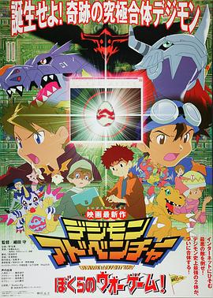

数码宝贝大冒险：我们的战争游戏！ / デジモンアドベンチャー ぼくらのウォーゲーム!
又名：Dejimon adobenchâ - Bokura no war game / Digimon Adventure: Our War Game / Digimon Movie: Children‘s War Game
不愧是自己的作品，夏日大作战无误:P
同系列作品
豆瓣作品页于 2026-09-04T11:51:43+10:00 提供的列表 · 列表范围未知
- 数码宝贝 滚球兽的诞生 / デジモンアドベンチャー · 看过 · ★★★★★
- 数码宝贝大电影三：前篇・数码兽飓风登陆！！后篇・超绝进化！！黄金的数码装甲 · 本档案未收录
- 数码宝贝02：超恶魔兽的反击 · 本档案未收录
- 数码宝贝大电影五：冒险者的战斗 · 本档案未收录
- 数码宝贝驯兽师之王：暴走数码宝贝特急 · 本档案未收录
- 数码宝贝大电影七：古代数码宝贝复活 · 本档案未收录
- 数码暴龙X进化 · 本档案未收录
- 数码宝贝拯救者：究极力量！爆裂模式发动！！ · 本档案未收录
- 数码宝贝大冒险tri. 第1章：再会 / デジモンアドベンチャー tri. 第1章 再会 · 看过 · ★★★☆☆
- 数码宝贝大冒险tri. 第2章：决意 / デジモンアドベンチャー tri. 第2章 決意 · 看过 · ★★★☆☆
- 数码宝贝大冒险tri. 第3章：告白 · 本档案未收录
- 数码宝贝大冒险tri. 第4章：丧失 · 本档案未收录
- 数码宝贝大冒险tri. 第5章：共生 · 本档案未收录
- 数码宝贝大冒险tri. 第6章：我们的未来 · 本档案未收录
- 数码宝贝：最后的进化 · 本档案未收录
- 数码宝贝02：最初的召唤 · 本档案未收录
页面标示「全部 17」；本次记录含 16 个条目，不保证包含全部系列作品。
其他作品页中的关联
- 数码宝贝大冒险tri. 第2章：决意 / デジモンアドベンチャー tri. 第2章 決意 的作品页曾将本作列入同系列（观测于 2026-09-04T11:51:34+10:00）。
- 数码宝贝大冒险tri. 第1章：再会 / デジモンアドベンチャー tri. 第1章 再会 的作品页曾将本作列入同系列（观测于 2026-09-04T11:51:40+10:00）。
- 数码宝贝 滚球兽的诞生 / デジモンアドベンチャー 的作品页曾将本作列入同系列（观测于 2026-09-04T11:51:46+10:00）。
作品信息
| 导演 | 细田守 |
| 编剧 | 本乡昭由 / 吉田玲子 |
| 主演 | 藤田淑子 / 水谷优子 / 风间勇刀 / 天神有海 / 前田爱 / 小西宽子 / 菊池正美 / 荒木香惠 / 坂本千夏 / 重松花鸟 / 山口真弓 / 樱井孝宏 / 山田木野子 / 松本美和 / 竹内顺子 / 德光由禾 / 平田广明 / 八奈见乘儿 |
| 类型 | 科幻 / 动画 / 冒险 |
| 制片国家/地区 | 日本 |
| 语言 | 日语 |
| 上映日期 | 2000-03-04(日本) |
| 片长 | 41分钟 |
| IMDb | tt0313441 |
最后一次看到是 2026-09-04T09:53:34+10:00 · 豆瓣原页